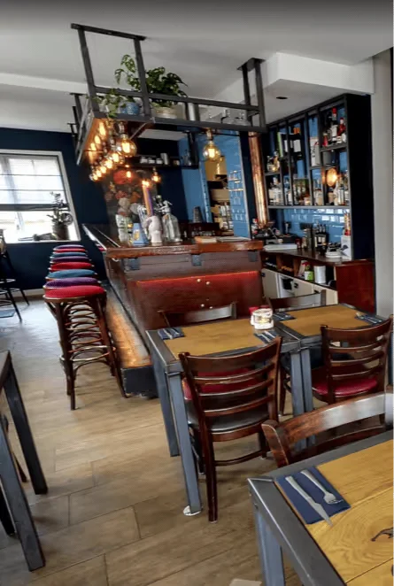

De parel van Katwijk aan Zee
Op zoek naar een sfeervol restaurant met heerlijke gerechten? Met een menu vol smaakvolle visgerechten en lokale lekkernijen is Neefies de place to be. Of je nu met vrienden, familie of die speciale persoon komt: we verwelkomen je oprecht, voor een gezellige avond vol goed eten, eerlijke mensen en liefde.
- 2018
Achter de Kattukse duinen opent het kleinste restaurant van ons dorp, maar 104 stappen van de boulevard. Verse ingrediënten in klassieke gerechten, maar dan in een modern jasje. Geniet en proef, de Neefies.
- 2023
Met de coronacrisis achter de rug hijsen we de zeilen en gaan we de zon tegemoet!

“Mensen komen hier voor ons gezellige restaurant. Kom langs en geniet: je wordt met open armen ontvangen.”
Floris de Lange, eigenaar
Kwaliteit en traditie
Verse producten
Mooi, volledig vers en voedzaam.
Altijd iets unieks
Een team vol getalenteerde en gediplomeerde pantrychefs.
Heerlijke gerechten
Wij maken verse gerechten, klassiek met een eigen draai.
Persoonlijke aandacht
Voor iedereen wat wils.